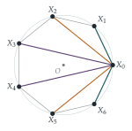

Let \(\omega = \mathrm{e}^{2\pi\mathrm{i}/n}\), where \(n\) is a positive integer. Show that, for any complex number \(z\), \[(z - 1)(z - \omega)\cdots(z - \omega^{n-1}) = z^n - 1.\] The points \(X_0, X_1, \ldots, X_{n-1}\) lie on a circle with centre \(O\) and radius \(1\), and are the vertices of a regular polygon.
The point \(P\) is equidistant from \(X_0\) and \(X_1\). Show that, if \(n\) is even, \[|PX_0| \times |PX_1| \times \cdots \times |PX_{n-1}| = |OP|^n + 1,\] where \(|PX_k|\) denotes the distance from \(P\) to \(X_k\).
Give the corresponding result when \(n\) is odd. (There are two cases to consider.)
Show that \[|X_0X_1| \times |X_0X_2| \times \cdots \times |X_0X_{n-1}| = n.\]
The hook
Draw a regular heptagon in a circle of radius \(1\). From one vertex, draw the six chords to the other vertices and measure them. Multiply the six lengths together. The answer is exactly \(7\). For a regular \(100\)-gon, the product of the \(99\) chords from one vertex is exactly \(100\).
Why should anything so clean be true? The chord lengths themselves are messy (\(2\sin\frac{\pi}{7}\), \(2\sin\frac{2\pi}{7}\), and so on). The question shows that the result is a geometric shadow of a simple algebraic identity, the factorisation of \(z^n - 1\) over the roots of unity, and that distances in the plane are moduli of complex numbers.
Before you start
Put the polygon’s vertices at the \(n\)th roots of unity, \(X_k = \omega^k\). If \(P\) is the point \(z\), what is \(|PX_k|\) in terms of \(z\)? So what is the product of all the distances?
\(|PX_k| = |z - \omega^k|\), and the product of all of them is \(|(z - 1)(z - \omega)\cdots(z - \omega^{n-1})|\), which the first part of the question says is \(|z^n - 1|\). A product of \(n\) distances has become a single modulus. Everything else is choosing \(z\) cleverly.
Working it through
Stage 1 The factorisation
Each \(\omega^k\) satisfies \((\omega^k)^n = (\omega^n)^k = 1\), so \(1, \omega, \ldots, \omega^{n-1}\) are roots of \(z^n - 1\). They are distinct (their arguments \(\frac{2\pi k}{n}\) are different, between \(0\) and \(2\pi\)), so they are all \(n\) roots of this degree-\(n\) polynomial with leading coefficient \(1\), and \(z^n - 1 = \prod_{k=0}^{n-1}(z - \omega^k)\).■
Stage 2 A point on the perpendicular bisector
Rotate the picture so that \(X_k = \omega^k\). The points equidistant from \(X_0 = 1\) and \(X_1 = \omega\) form the perpendicular bisector of \(X_0X_1\), which is the line through \(O\) at angle \(\frac\pi n\).
So \(P\) is \(z = te^{\mathrm{i}\pi/n}\) for some real \(t\) (positive or negative), with \(|OP| = |t|\). What is \(z^n\)?
\(z^n = t^ne^{\mathrm{i}\pi} = -t^n\). So \[|PX_0| \times \cdots \times |PX_{n-1}| = |z^n - 1| = |{-t^n} - 1| = |t^n + 1|.\] If \(n\) is even, \(t^n = |t|^n \geq 0\), so this is \(|OP|^n + 1\).■
What happens when \(n\) is odd? Consider \(t > 0\) and \(t < 0\) separately, and say what each case means geometrically.
If \(n\) is odd, \(t^n\) has the same sign as \(t\).
If \(t \geq 0\), so \(P\) is on the same side of \(O\) as the midpoint of \(X_0X_1\), the product is \(|OP|^n + 1\).
If \(t < 0\), so \(P\) is on the opposite side of \(O\) (towards the vertex opposite the side \(X_0X_1\)), then \(t^n = -|OP|^n\) and the product is \(\bigl|1 - |OP|^n\bigr|\).
For odd \(n\), the line through \(O\) perpendicular to \(X_0X_1\) passes through a vertex on the far side; in the second case, the product vanishes when \(P\) is that vertex (\(|OP| = 1\)), as it must, since one of the distances is then zero.
Stage 3 Chords from a vertex
Now \(P = X_0\), and one of the distances, \(|X_0X_0|\), is zero, so \(|z^n - 1| = 0\) is no use. What polynomial has the roots \(\omega, \omega^2, \ldots, \omega^{n-1}\) but not \(1\)?
Dividing \(z^n - 1\) by \(z - 1\), \[(z - \omega)(z - \omega^2)\cdots(z - \omega^{n-1}) = \frac{z^n - 1}{z - 1} = 1 + z + z^2 + \cdots + z^{n-1}.\] The right-hand side is a polynomial, so this holds for every \(z\), including \(z = 1\), where it equals \(n\). Taking moduli at \(z = 1\), \[|X_0X_1| \times |X_0X_2| \times \cdots \times |X_0X_{n-1}| = |1 - \omega|\,|1 - \omega^2|\cdots|1 - \omega^{n-1}| = n. \qed\]

Looking back
Distances are moduli. \(|PX_k| = |z - \omega^k|\), so a product of distances is the modulus of a product, and the product had a closed form.
Use symmetry to choose coordinates. Rotating so that the vertices are the roots of unity, and using the symmetry line through \(O\), made \(z^n\) easy to compute.
Cancel the zero before substituting. As in Section 5.3, dividing out the factor that vanished at the point of interest rescued the substitution.
What’s really going on
Part (i) is a theorem of Roger Cotes, the brilliant young Cambridge mathematician who edited the second edition of Newton’s Principia and died in 1716 at the age of thirty-three (Newton said “if he had lived we might have known something”). Cotes found that if \(P\) lies on a ray from \(O\) through a vertex of a regular \(n\)-gon, then the product of the distances from \(P\) to the vertices is \(\bigl||OP|^n - 1\bigr|\), and if \(P\) lies on a ray through the midpoint of a side, it is \(|OP|^n + 1\). He used this, without complex numbers, to factorise \(x^n \pm 1\) into real quadratics, which he needed for integrating rational functions. The theorem was published after his death, in 1722.
A product of sines
Since \(|1 - \omega^k| = |e^{-\mathrm{i}\pi k/n} - e^{\mathrm{i}\pi k/n}| = 2\sin\frac{k\pi}{n}\), part (ii) says \[\prod_{k=1}^{n-1}\sin\frac{k\pi}{n} = \frac{n}{2^{n-1}}.\] This is the companion of the cosine products in Section 5.3. A related product gives the discriminant of \(z^n - 1\): the product of the squared distances between all pairs of distinct \(n\)th roots of unity is \(n^n\). Discriminants measure how far apart the roots of a polynomial are, and they are central to the algebra of polynomials and of number fields, which we take up in Chapter 6.
Electrostatics and equal spacing
There is also a physical reading. Place \(n\) equal electric charges on a circle; the configuration that minimises the potential energy (with the logarithmic potential of two-dimensional electrostatics) is the regular polygon, and the energy involves exactly \(\sum\ln|X_jX_k|\), the logarithm of a product of distances. Points that are “as spread out as possible” are important in numerical analysis (Section 3.6, where the best interpolation points come from a regular polygon via \(x = \cos\theta\)) and in the theory of random matrices.
The thinking skill
Points in the plane are complex numbers, distances are moduli, and regular polygons are roots of unity. A product of distances becomes the modulus of a polynomial.
The translation lets algebraic identities, like the factorisation of \(z^n - 1\), prove geometric facts that would be very hard to see directly.
Try this next
Check small cases. Verify part (ii) directly for a square (\(n = 4\)) and an equilateral triangle (\(n = 3\)).
Through a vertex. Show that if \(P\) lies on the ray from \(O\) through \(X_0\), then \(|PX_0| \times \cdots \times |PX_{n-1}| = \bigl||OP|^n - 1\bigr|\).
The average distance. Using part (ii) and the AM–GM inequality of Section 3.2, show that the average length of the \(n - 1\) chords from \(X_0\) is at least \(n^{1/(n-1)}\). Find the actual average, \(\frac{1}{n-1}\sum_k 2\sin\frac{k\pi}{n}\), for \(n = 6\), and compare.
All the chords. harder Show that the product of all \(\binom n2\) chord lengths of a regular \(n\)-gon inscribed in a unit circle is \(n^{n/2}\).
Further reading
Tristan Needham, Visual Complex Analysis (Oxford University Press). Geometry with complex numbers, beautifully illustrated.
Ross Honsberger, Mathematical Gems (Mathematical Association of America). Several elegant problems about regular polygons.
Ronald Gowing, Roger Cotes: Natural Philosopher (Cambridge University Press). A biography of Cotes and his mathematics.